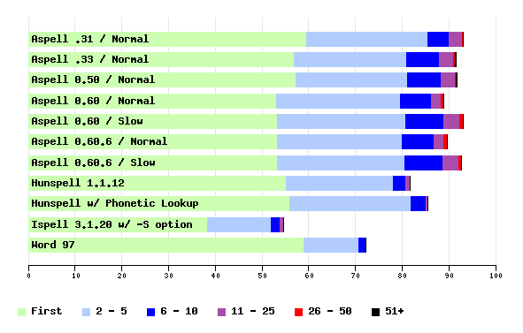

| Score | Total Not Found | Total Found | First | 1 - 5 | 1 - 10 | 1 - 25 | 1 - 50 | Any | |
|---|---|---|---|---|---|---|---|---|---|
| Aspell .31 / Normal | 93.1 | 34 | 459 | 59.6 | 85.6 | 90.1 | 92.9 | 93.1 | 93.1 |
| Aspell .33 / Normal | 91.7 | 41 | 452 | 57.0 | 80.9 | 88.0 | 91.1 | 91.5 | 91.7 |
| Aspell 0.50 / Normal | 91.9 | 40 | 453 | 57.2 | 81.1 | 88.4 | 91.5 | 91.7 | 91.9 |
| Aspell 0.60 / Normal | 89.0 | 54 | 439 | 53.1 | 79.7 | 86.2 | 88.4 | 89.0 | 89.0 |
| Aspell 0.60 / Slow | 93.1 | 34 | 459 | 53.3 | 80.7 | 89.0 | 92.5 | 93.1 | 93.1 |
| Aspell 0.60.6 / Normal | 89.7 | 51 | 442 | 53.3 | 80.1 | 86.8 | 89.0 | 89.7 | 89.7 |
| Aspell 0.60.6 / Slow | 92.9 | 35 | 458 | 53.3 | 80.5 | 88.8 | 92.3 | 92.9 | 92.9 |
| Hunspell 1.1.12 | 81.7 | 90 | 403 | 55.2 | 78.1 | 80.7 | 81.7 | 81.7 | 81.7 |
| Hunspell w/ Phonetic Lookup | 85.6 | 71 | 422 | 56.0 | 81.9 | 85.2 | 85.6 | 85.6 | 85.6 |
| Ispell 3.1.20 w/ -S option | 54.8 | 223 | 270 | 38.3 | 51.9 | 54.0 | 54.8 | 54.8 | 54.8 |
| Word 97 | 72.2 | 137 | 356 | 59.0 | 70.8 | 72.2 | 72.2 | 72.2 | 72.2 |
The Score is: (Total Found)/(Total)*100
First is: (Total Found First On List)/(Total)*100,
1-5 is: (Total Found 1st - 5th)/(Total)*100, etc...

Graph created with Ploticus
| Min | 5% | 25% | 50% | 75% | 95% | Max | |
|---|---|---|---|---|---|---|---|
| Aspell .31 / Normal | 3 | 4 | 8 | 12 | 20 | 36 | 96 |
| Aspell .33 / Normal | 3 | 4 | 7 | 12 | 19 | 37 | 64 |
| Aspell 0.50 / Normal | 3 | 4 | 7 | 12 | 19 | 36 | 63 |
| Aspell 0.60 / Normal | 2 | 4 | 8 | 13 | 24 | 47 | 100 |
| Aspell 0.60 / Slow | 3 | 4 | 9 | 14 | 26 | 50 | 100 |
| Aspell 0.60.6 / Normal | 2 | 4 | 7 | 12 | 24 | 47 | 96 |
| Aspell 0.60.6 / Slow | 2 | 4 | 8 | 14 | 26 | 50 | 96 |
| Hunspell 1.1.12 | 1 | 1 | 4 | 4 | 5 | 10 | 15 |
| Hunspell w/ Phonetic Lookup | 1 | 1 | 4 | 6 | 7 | 11 | 15 |
| Ispell 3.1.20 w/ -S option | 0 | 0 | 0 | 1 | 3 | 10 | 29 |
| Word 97 | 0 | 0 | 1 | 2 | 4 | 10 | 20 |
| Aspell .31 / Normal | 3.58 |
| Aspell .33 / Normal | 29.46 |
| Aspell 0.50 / Normal | 24.02 |
| Aspell 0.60 / Normal | 0.69 |
| Aspell 0.60 / Slow | 4.82 |
| Aspell 0.60.6 / Normal | 1.18 |
| Aspell 0.60.6 / Slow | 5.26 |
| Hunspell 1.1.12 | 24.39 |
| Hunspell w/ Phonetic Lookup | 42.16 |
| Ispell 3.1.20 w/ -S option | 0.15 |
| Word 97 |